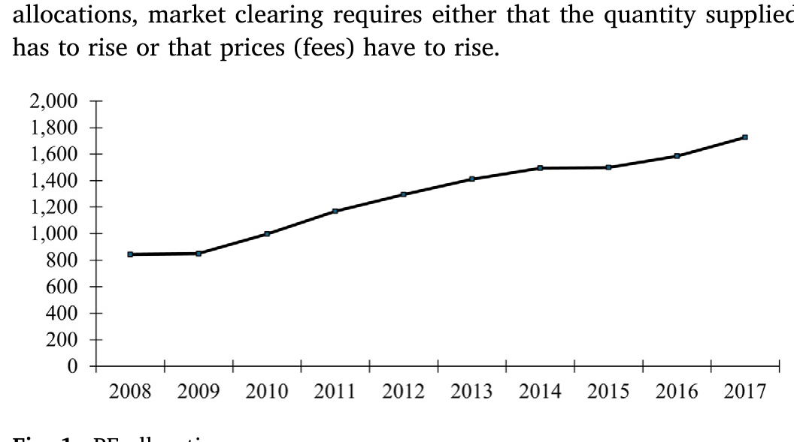
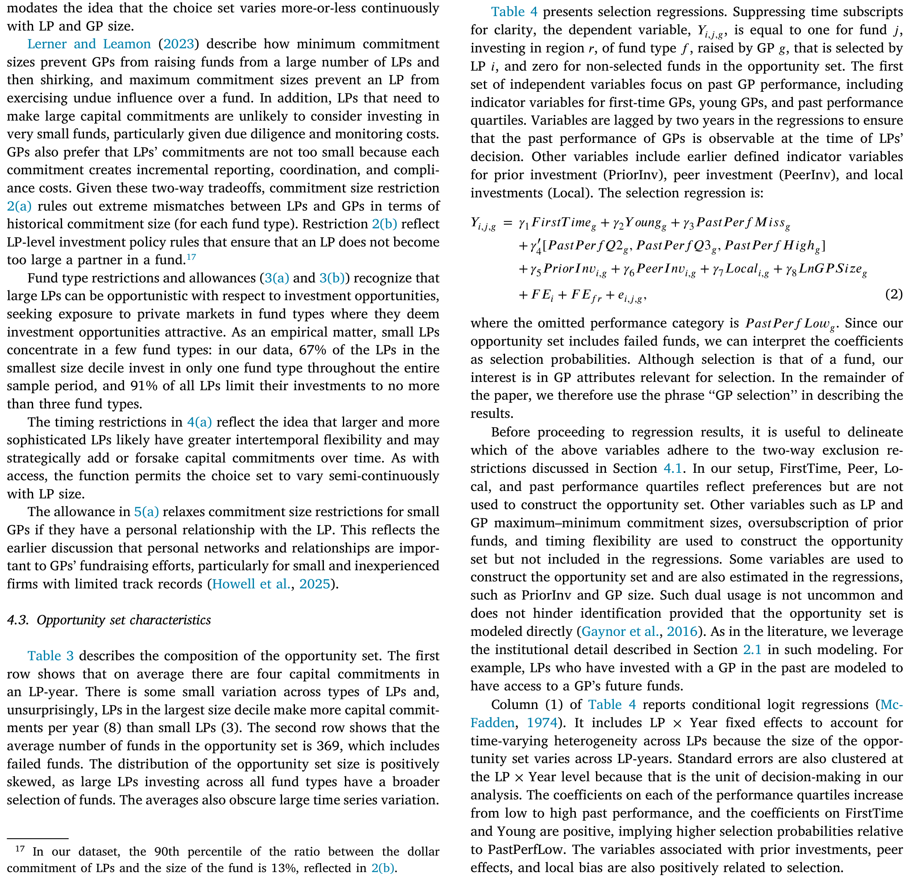
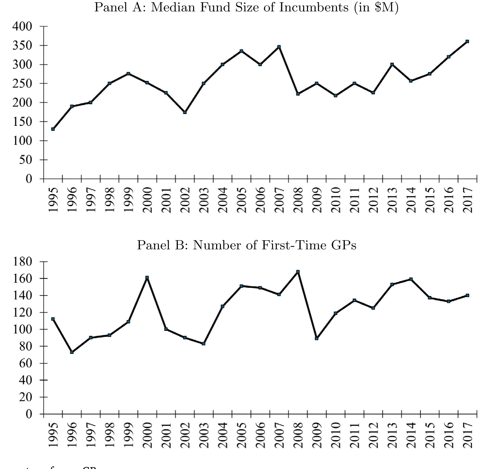
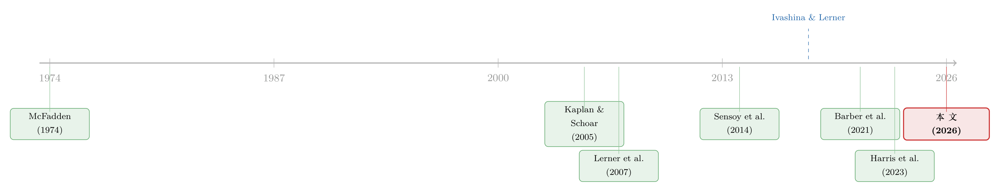

没有战绩，照样拿到钱：私募市场里，LP 为什么愿意把钱交给「新人」？
本文读的是 Goyal, Wahal & Yavuz (2026, JFE)：作者从 2692 家北美机构投资者、6.16 万笔出资中重建了每一笔出资当时「本可以选」的机会集，发现 LP 一边追逐过往业绩，一边又出奇地愿意把钱交给没有任何战绩的「首发」管理人——选中一只首发基金的概率（1.06%）几乎和选中业绩最高四分位 GP 的概率（1.02%）一样高。最朴素的解释不是 LP 看好新人，而是它们「不得不投」。
1 一个自相矛盾的行业共识
私募市场里有一句被反复念叨的老话：投私募，就是投人；而判断一个人行不行，最硬的证据是战绩（track record）。Lerner 和 Leamon（2023）说得很直白——LP「极度看重战绩，因为他们投的是一个有着漫长封闭期的盲池」。一份业内报告甚至专门论证「首发基金值不值得投」这件事本身就是个需要被论证的难题。
可偏偏有人不信这套。耶鲁捐赠基金的传奇掌门人 Swensen 反过来说：「战绩这东西被严重高估了」，「耶鲁最好的一些投资，恰恰来自那些没有战绩的人」。
于是张力出现了：一边是「不要碰首发基金」的铁律，一边是「最好的机会都在无名之辈手里」的反叛。到底哪一边更接近真相？这正是这篇论文想回答的问题——LP 是怎么挑管理人的，尤其是当这个管理人根本没有可观察的业绩时。
听上去这是个很好回答的实证问题：把 LP 真正投了谁、和它本可以投谁放在一起比一比不就行了？
但真正的麻烦，恰恰藏在「本可以投谁」这六个字里。
2 真正卡住所有人的，是那张看不见的「菜单」
研究「选择」的标准工具，是 McFadden（1974）开创的离散选择模型（discrete choice model）。它的逻辑很简单：一个人从一组可选项里挑了一个，我们就能从「挑中的 vs. 没挑中的」之间的差异反推出他的偏好。
但这套机器有一个致命前提——选择集（choice set）必须是完全可观测的。
公开市场上这不成问题：所有上市股票人人可买，菜单是公开的。可私募市场不是。一笔出资落定时，我们看得见 LP 投了哪只基金，却看不见当时它面前到底摆着哪些选项。而观测到的选择，是偏好与选择集两者共同作用的结果——
如果你把「所有正在募资的基金」当成每个 LP 的菜单，你会犯一个系统性错误：顶级 GP 会配给式地限制准入（Cochrane（2005）认为私募是竞争性市场、人人可投，但现实里精英 GP 会挑客户），小 LP 根本进不了它们的门。把进不去的选项也算进菜单，估出来的偏好就是错的。
这就是全文的「阿喀琉斯之踵」，也是作者真正的贡献所在：他们没有去估一个更花哨的模型，而是老老实实地、一笔一笔地，把每个 LP 在每一年「真正够得着」的机会集给重建出来。
3 机会集是怎么一砖一瓦搭出来的
作者的起点是一个「超集」（superset）：在 LP 实际出资时点的前后一个窗口内，所有正在募资的 GP——包括那些最终募资失败的尝试。把失败的募资也纳进来，这一点很关键，因为它还原了 LP 当时面对的真实「货架」，而不是事后幸存下来的那批。
然后，作者在这个超集上施加五类限制与放行，把它收缩成可投的「机会集」（opportunity set）。这些规则不是拍脑袋定的，而是来自三处：已有文献、对三家大型 LP 的访谈、以及从样本中出资最多的 100 家 LP 里扒出的 44 份投资政策声明（investment policy statement, IPS）。五类规则分别对应：
- 准入异质性：精英 GP 会配给准入，因此不是所有 LP 都能投到所有 GP；
- 可接受的出资规模：选择是多维的，不只是选哪只基金，还包括投多大——于是按 LP 和 GP 各自的历史出资记录设定最小/最大出资额；
- 子类别配置的异质性：大 LP 会在并购、风投、成长、不良债、地产、基建等子类别之间战略性地切换敞口；
- 择时弹性：大 LP 有跨期腾挪的余地，可以为了等心仪 GP 而等很久，而不必在当下募资的 GP 里硬选；
- 私人关系：私募募资高度依赖关系，LP 与 GP 之间的私人连接会影响谁出现在菜单上。
就这样，作者为每一个「LP×年份」造出了一张专属的机会集。手里攥着这些机会集，离散选择模型才真正立得住。

Figure 1: PE allocations
4 选择模型：概率的语言
在 McFadden 的条件 logit 框架下，LP \(i\) 从其机会集 \(C_i\) 中选中基金 \(j\) 的概率写作：
$$P_{ij} = \frac{\exp(x_{ij}\,\beta)}{\sum_{k \in C_i} \exp(x_{ik}\,\beta)}$$
这里 \(x_{ij}\) 是 GP/基金 \(j\) 的一组属性（过往业绩四分位、是否首发、是否本地、是否被同行投过、是否有过往投资关系……），\(C_i\) 就是上一节费尽力气搭出来的那张机会集。
读这篇文章，关键是要把系数翻译成人话：回归系数代表的是「拥有某种属性的 GP 被选中的概率」——如果这个属性在『被选中的基金』里出现得比在『机会集里所有基金』中更频繁，选中概率就更高。 后文所有「1.06%」「9.7%」这样的数字，都是这个意义上的增量选择概率。
5 结果：业绩当然重要，但「新人」也照样被选中
第一组结果不出所料：过往业绩与被选中概率之间存在稳健的单调关系——业绩越靠前，越容易被选中。追逐业绩（performance chasing）这件事是真实存在的。
但真正让人坐直身子的是第二组结果。作者把「没有可观测业绩」的 GP 分成两类：
- 首发 GP（first-time GP）：正在募集人生第一只基金，完全没有战绩；
- 年轻 GP（young GP）：在募后续基金，但成立时间太短，还攒不出可靠的基金级业绩。
结果是：选中一只首发 GP 的增量概率高达 1.06%，而选中业绩最高四分位 GP 的增量概率是 1.02%（两者都相对于业绩最低四分位）；年轻 GP 的选中概率也有 0.76%。
换句话说——一个毫无战绩的新人，被选中的概率和一个业绩最顶尖的老将几乎一样高。 在「投私募就是投战绩」的行业信仰面前，这个结果近乎离经叛道。而且作者用一整套稳健性检验证明，无论换哪种方式构造机会集，这个倾向都稳稳地在。

Table 4: presents selection regressions. Suppressing time subscripts
顺带，作者还顺手量化了另外几个长期被讨论、却从未被「机会集」校准过的因素，每一个都是干货：
- 再投资（reinvestment）：一个 LP 之前投过的 GP，被它再次选中的概率要高出
9.7%——这是所有因素里最大的一个； - 本地偏好（local bias）：本州 GP 相对外州 GP 的增量选中概率为
0.98%； - 同行选择（peer effect）：被同行 LP 选过的 GP，被选中概率高
0.58%——而且这个效应不是被 GP 声誉驱动的，据作者所知是一个全新发现； - 私人关系：私人连接让所有 GP 的选中概率提高
0.54%，但对首发 GP 的拉动更强，达0.96%。
6 反转：为什么 LP 偏要投新人？把解释一个个排除掉
到这里，一个自然的问题是：LP 为什么愿意把钱押在没有战绩的人身上？作者没有急着下结论，而是像剥洋葱一样，把所有「听上去合理」的解释一层层排除。
会不会是 LP 真的看好新人的回报？ 不是。用 Barber et al.（2021）的方法算出来，首发基金的超额预期内部收益率（IRR）是 −1.65%，而最高四分位 GP 是 +4.45%；事后实现的超额 IRR 也对得上——首发基金 −1.08%，最高四分位 +2.63%。投新人，事前事后都不划算。
会不会是「彩票偏好」，赌新人有偏度更高的暴击收益？ 不是。首发 GP 的业绩偏度并不更高，跟最高四分位 GP 比尤其如此。
会不会是「先占个坑」，赌某个新人将来会变成限制准入的明星？ 也不是。后来真的熬成顶级 GP 的首发基金数量很小，远不足以解释最初被创造出来的首发基金之多；而且 LP 对首发 GP 后续基金的追投，也并不带来更好的业绩。
会不会是新人靠超额的联合投资（co-investment）机会、变相降费来吸引 LP？ 在能观测到这类数据的子样本里，没有证据表明首发 GP 更愿意提供联合投资机会。
四条「故事性」解释全部落空。于是真正的解释浮出水面，而且简单得近乎奥卡姆剃刀：这是一个供需问题。
逻辑是这样的：机构对私募的配置从 2008 年的 7% 涨到 2017 年的近 20%（Ivashina and Lerner, 2018），需求暴涨。但供给端，高业绩的 GP 出于信息摩擦和组织约束，并不成比例地扩大基金规模（Kaplan and Schoar, 2005; Harris et al., 2023），也不轻易涨费（Hochberg et al., 2014）。于是过剩的需求总得有个去处——一部分被另类工具吸收（Lerner et al., 2022），而首发 GP 的进入，正是市场出清的另一个关键环节。在样本里，首发和年轻 GP 合计吸纳了 25,942 笔出资、总额 $715 billion。

Figure 2: Median fund size and the entry of new GPs
但真正关键的一步，是作者把这个供需故事可检验化了。他们构造了一个「投资压力」（pressure-to-invest）指标，由两块信息合成：(a) 实际组合权重与目标权重的偏离（347 家 LP 可得），(b) 配置的增速（全样本可得）。结果一刀切下去，泾渭分明：
面临高投资压力的 LP，选首发 GP 的概率高于选最高四分位 GP；而没有压力的 LP，选首发 GP 的概率低于选最高四分位 GP。
这就把整个谜题收口了：驱动「偏爱新人」这个反常倾向的主导机制，是投资压力。当一个 LP 被目标配置追着跑、又挤不进顶级 GP 的门时，它只能沿着业绩的阶梯一级级往下走——直到走到那些根本没有战绩的新人面前。所谓投资新人，与其说是慧眼识珠，不如说是被需求推着、不得不投。
7 文献脉络
这条研究线的底色，是私募市场里关于「业绩、准入与选择」的长期争论。早期，Kaplan and Schoar（2005）确立了私募业绩持续性这一核心议题，也指出顶级 GP 不成比例扩张规模的现象；Sørensen（2007）则用双边匹配模型刻画风投中「钱与人」的配对。随后，关于 LP 类型差异的研究密集涌现——Lerner et al.（2007）记录了捐赠基金的超额业绩，Sensoy et al.（2014）将其归因于对早期高绩效风投的优先准入，Da Rin and Phalippou（2017）则认为关键不在「特殊」而在 LP 规模与尽调能力。

与此并行的，是把「选择」从「业绩」中剥离出来的方法论努力。McFadden（1974）的条件 logit 是所有离散选择分析的源头；Barber et al.（2021）把随机效用框架引入私募、估计对影响力基金的支付意愿；Cavagnaro et al.（2019）用自助法区分运气与技能。本文站在这条脉络的交汇点上：它既继承了离散选择的工具，又直面了私募特有的「选择集不可观测」难题，用精心重建的机会集，第一次把首发 GP、本地偏好、同行效应这些因素的选择概率干净地量化了出来。
8 评论与延伸（Q&A + 研究方向）
(a) 几个可能的疑问
Q：机会集是作者「造」出来的，会不会整个结论都是构造假设的产物？
这是最该担心的地方，作者也最当回事。他们用文献、访谈、44 份 IPS 三方交叉来定规则，并做了一整套稳健性检验：换不同方式构造机会集，首发 GP 相对最高四分位 GP 的高选中概率始终稳健。当然，机会集本质上仍是「可信的近似」而非真实观测，这是这类方法绕不开的天花板。
Q：首发 GP 和年轻 GP 有什么区别，为什么要分开？
首发 GP 完全没有战绩（在募第一只基金）；年轻 GP 募的是后续基金，但成立太短、攒不出可靠的基金级业绩。分开是因为两者的信息环境不同，而结果显示二者选中概率都很高（首发 1.06%、年轻 0.76%），说明「无战绩照样被选」不是某一类的特例。
Q：「投资压力」会不会只是反向因果——是因为投了新人才显得有压力？
指标的设计尽量前定：组合权重对目标权重的偏离、以及配置增速，反映的是 LP 进入选择时已背负的配置缺口，而非选择的结果。方向上，高压力对应「下探业绩阶梯」、无压力对应「偏向顶级」，与供需故事一致。但严格的因果识别仍有空间，这更像是机制证据而非干净的外生冲击。
Q：再投资 9.7% 的增量概率，是不是说关系比业绩重要得多？
量级上确实远超业绩四分位的差异。但要小心解读：再投资捆绑了信息权、治理影响、信任与更低的尽调成本（Hochberg et al., 2014; Lerner et al., 2007），是「关系 + 信息」的复合体，不能简单等同于「关系压倒业绩」。
Q：同行效应 0.58% 为什么算新发现？
因为作者证明它不是被 GP 声誉驱动的——剔除声誉后，「被同行投过」本身仍显著提高选中概率。这把「跟随同行」从「大家都追名牌」里分离了出来，指向一种类似再投资的信息传递（同行的出资本身携带信号）。
Q：这对正在进入零售端的私募意味着什么？
如果机构层面「需求推着钱往新人走」的机制成立，那么当 401(k)、RIA、interval fund 把更多零售资金导入私募，整体需求只会更大、出清压力只会更强，首发 GP 的进入可能进一步被需求托起——而其平均回报却是负的超额 IRR。对零售投资者保护而言，这不是个让人安心的推论。
(b) 几个可能的研究问题与提案
1. 把「机会集」方法搬到公司债的承销/配售选择上
【经济故事】债券一级市场的配售同样是「选择集不可观测」：投资者实际拿到的份额，既取决于偏好，也取决于承销商的配给。能不能用类似机会集的思路，重建每个机构在每只新债发行时「本可申购」的集合，从而把「追逐发行人资质」与「承销关系驱动的配给」分离开？ 【可行性】中。难点在于一级市场簿记数据稀缺；若能拿到承销商簿记（book）或监管报送的配售明细，识别策略可借鉴本文。数据是主要瓶颈。
2. 外资 LP 是否系统性地更难投到「新人」
【经济故事】本文的准入限制对所有 LP 一视同仁，但跨境 LP 面对的信息与关系壁垒可能更高。外资机构是否被系统性地挡在首发 GP 之外、只能在头部 GP 里挤？这直接关系到「外资是否加剧了头部集中」。 【可行性】高。Preqin 已标注 LP 国别，可在本文机会集框架内加一个「跨境」交互项，识别相对干净。
3. 「投资压力」与流动性周期的耦合
【经济故事】如果高压力 LP 会下探业绩阶梯去投新人，那么这种压力在募资大年（dry powder 高企）会集体性放大，可能形成「新人进入潮」——进而影响二级市场的份额转让流动性。能否把宏观募资周期与个体投资压力打通，看新人进入是否在周期顶点扎堆、并在退潮时折价转让？ 【可行性】中。需要 Preqin 出资数据 + 二级份额交易（secondary）价格，后者获取较难，但识别逻辑清晰。
4. 首发 GP 的「负超额 IRR」是不是治理与信息的代价
【经济故事】首发基金平均跑出 −1.08% 的实现超额 IRR，到底是 LP 系统性高估了新人，还是「不得不投」下的理性次优？若能区分「主动看好」与「被动出清」两类出资，比较二者后续业绩，就能给「navigate down the ladder」加一个福利标尺。 【可行性】中。可用本文的投资压力指标做样本切分，比较高/低压力下首发出资的事后业绩；数据本文已具备，属于自然的延伸。
我的判断
这篇文章最扎实的贡献，不在某一个系数，而在那张被重建出来的机会集——它把私募选择研究里长期被回避的「选择集不可观测」问题正面接了下来，并用文献、访谈、IPS 三方校准，做得足够透明、足够可证伪。在此基础上，「无战绩 GP 与顶级 GP 选中概率几乎相等」这个反直觉事实，以及「投资压力是主导机制」的供需解释，都立得很稳，逻辑闭环也漂亮（把彩票、占坑、降费、看好回报四条对手假设逐一排除，是教科书式的论证节奏）。
我对识别的主要保留仍落在机会集本身：它毕竟是「可信的构造」而非真实观测，五类限制每一条的松紧都会平移选中概率的基准；尽管稳健性检验很全，结论对规则设定的敏感度，读者还是只能部分地相信作者。其次，「投资压力」是机制证据，不是外生冲击——我更想看到一个能制造压力外生变动的实验（比如目标配置的规则性调整、或监管要求的配置下限变化），把供需故事从「相关」推到「因果」。
往下走，我最想看到两件事：一是把这套机会集方法移植到能观测一级配售的市场（公司债是天然的候选），二是顺着零售化的趋势，问一句更尖锐的话——当越来越多不具备尽调能力的资金被「需求」推着走向负超额回报的新人，谁来为出清买单。
参考文献
- Barber, B. M., Morse, A., & Yasuda, A. (2021). Impact investing. Journal of Financial Economics 139(1), 162–185.
- Braun, R., Jenkinson, T., & Schemmerl, C. (2020). Adverse selection and the performance of private equity co-investments. Journal of Financial Economics 136(1), 44–62.
- Cain, M. D., McKeon, S. B., & Solomon, S. D. (2020). Intermediation in private equity: The role of placement agents.
- Cavagnaro, D. R., Sensoy, B. A., Wang, Y., & Weisbach, M. S. (2019). Measuring institutional investors' skill at making private equity investments.
- Cochrane, J. H. (2005). The risk and return of venture capital. Journal of Financial Economics 75(1), 3–52.
- Da Rin, M., & Phalippou, L. (2017). The importance of size in private equity: Evidence from a survey of limited partners.
- Harris, R. S., Jenkinson, T., Kaplan, S. N., & Stucke, R. (2023). Has persistence persisted in private equity?
- Hochberg, Y. V., & Rauh, J. D. (2013). Local overweighting and underperformance: Evidence from limited partner private equity investments. Review of Financial Studies 26(2), 403–451.
- Hochberg, Y. V., Ljungqvist, A., & Vissing-Jørgensen, A. (2014). Informational holdup and performance persistence in venture capital. Review of Financial Studies 27(1), 102–152.
- Ivashina, V., & Lerner, J. (2018). Looking for alternatives: Pension investments around the world, 2008 to 2017.
- Kaplan, S. N., & Schoar, A. (2005). Private equity performance: Returns, persistence, and capital flows. Journal of Finance 60(4), 1791–1823.
- Lerner, J., & Leamon, A. (2023). Venture Capital, Private Equity, and the Financing of Entrepreneurship.
- Lerner, J., Schoar, A., & Wongsunwai, W. (2007). Smart institutions, foolish choices: The limited partner performance puzzle. Journal of Finance 62(2), 731–764.
- Lerner, J., Mao, J., Schoar, A., & Zhang, N. R. (2022). Investing outside the box: Evidence from alternative vehicles in private equity.
- Lopez-de-Silanes, F., Phalippou, L., & Gottschalg, O. (2015). Giants at the gate: Investment returns and diseconomies of scale in private equity. Journal of Financial and Quantitative Analysis 50(3), 377–411.
- McFadden, D. (1974). Conditional logit analysis of qualitative choice behavior. In Zarembka, P. (Ed.), Frontiers in Econometrics, 105–142.
- Phalippou, L., & Gottschalg, O. (2009). The performance of private equity funds. Review of Financial Studies 22(4), 1747–1776.
- Robinson, D. T., & Sensoy, B. A. (2013). Do private equity fund managers earn their fees? Compensation, ownership, and cash flow performance. Review of Financial Studies 26(11), 2760–2797.
- Sensoy, B. A., Wang, Y., & Weisbach, M. S. (2014). Limited partner performance and the maturing of the private equity industry. Journal of Financial Economics 112(3), 320–343.
- Sørensen, M. (2007). How smart is smart money? A two-sided matching model of venture capital. Journal of Finance 62(6), 2725–2762.
- Swensen, D. F. (2000). Pioneering Portfolio Management: An Unconventional Approach to Institutional Investment. Free Press.